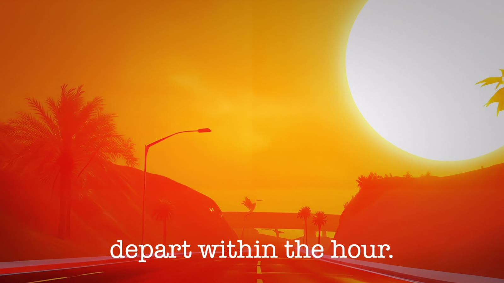
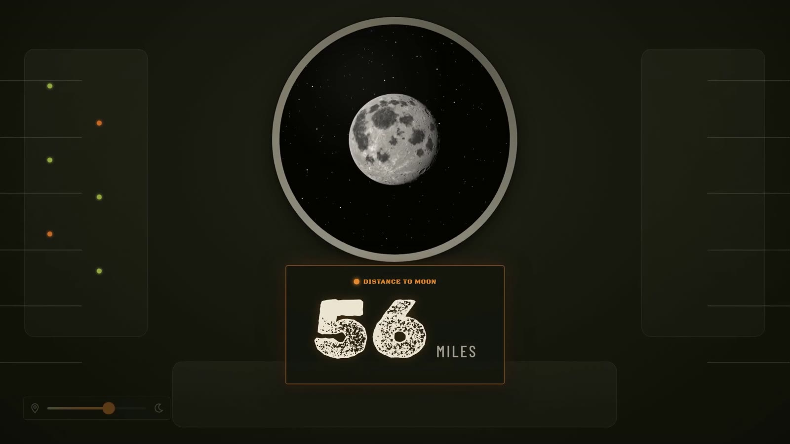
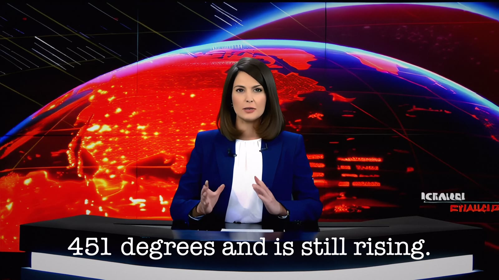
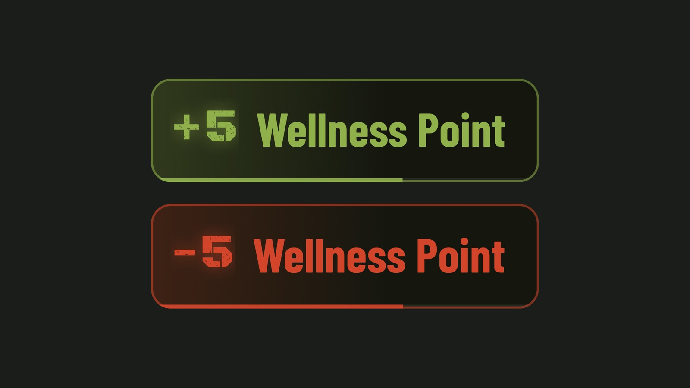
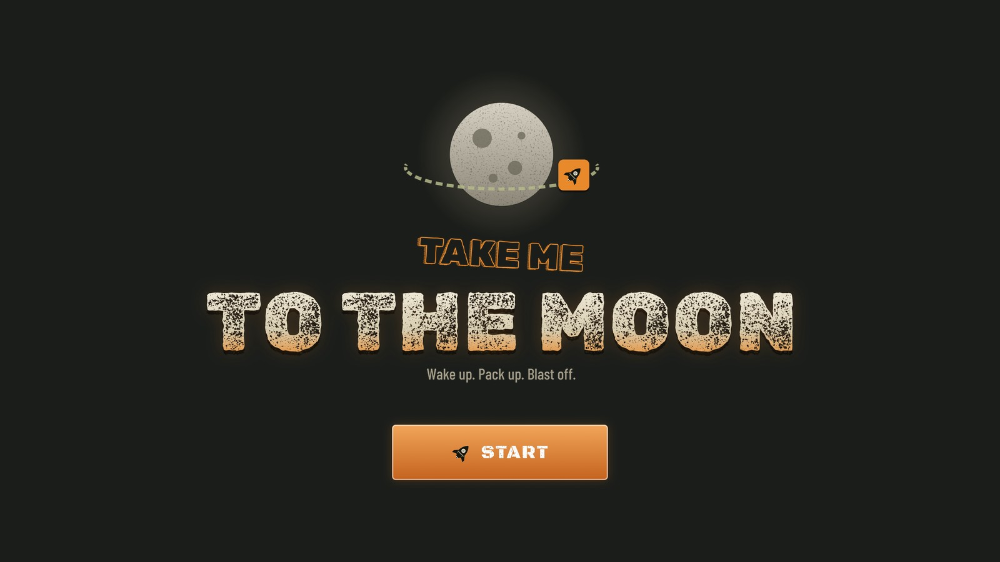

System
One real-time loop, from choice to live video
The headset calls OpenAI directly. The AI acts as a story director, returning structured data every turn — the scene, two choices, their wellness costs, and video prompts. Those prompts go to Visko, and the generated video streams back into Unity. Carrying this loop through an entire playthrough was the hardest part of the build.
Player choice
The player picks one of two options inside the VR panel.
AI story director
OpenAI writes the next scene, two choices, and wellness costs from the full history.
Visko generation
Video prompts are turned into a live, generated scene.
Unity playback
Video streams onto a curved screen wrapped in a 360° skybox.

My Role
Game flow, VR UI & demo production
I designed the game flow and UI in Figma, then worked with the team to translate them into readable VR panels in Unity. I also helped produce the showcase video — capturing in-game footage and editing it with VLLO and Figma.
Design
- Mapping the six-checkpoint game flow
- Designing VR UI panels in Figma
- Defining panel size, distance, tilt & contrast for VR
- Building layouts that survive AI text of any length
Story & Production
- Storyboarding scenarios on a whiteboard with the team
- Tuning the wellness score through live testing
- Capturing in-game footage
- Editing the demo video (VLLO, Figma)
Design Approach
Theme → Fixed Storyboard → Self-Writing Story
Starting point: this year's Immerse the Bay theme, "Take Me to the Moon." We imagined the journey beginning somewhere every player could picture — a Stanford dorm room — and focused on storytelling so anyone could pick it up and see themselves in it.
Theme
Turn a fixed destination into a question about character: not if you escape, but who you become on the way.
Fixed storyboard
Lock six locations and leave the events at each one open, so the AI has guardrails without losing variety.
Self-writing story
Let the AI write each scene in real time, remembering earlier choices so the journey feels connected.
The Journey
Six checkpoints, endless playthroughs
You get 15 seconds to grab three items from your room — and those items come back to matter in later emergencies.

The dorm room
Wake your roommate, or slip out alone.

Memorial Church
On a burning campus: steal a motorbike, run the Caltrain tracks, or flag down an ambulance.

The launch pad
Fuel the rocket by hand, throwing your items into the tank.

Low orbit
The rocket is too heavy. Cut loose the strangers on your ladder, or pull them in and risk everything.

The approach
Your roommate returns to the story — beside you, or calling from Earth.

The Moon
Your choices are judged at the colony gate.
Design Challenges & Solutions
Four friction points, four design decisions
Challenge 1
Readable UI over moving video
The friction: flat-screen UI rules broke in VR — text over constantly changing live video became hard to read.
Rethought panel size, viewing distance, tilt, and contrast specifically for the headset, then converted the Figma panels into VR panels in Unity.
A consistent look, feel, and navigation across every scene, readable no matter what video plays behind it.

Challenge 2
Designing for unpredictable text
The friction: the AI writes every scene and option live, so we never knew how long any line of copy would be.
Designed flexible layouts that hold AI-generated text of any length without breaking, instead of designing around fixed copy.
The UI stayed intact across playthroughs where no two scenes were ever the same.

Challenge 3
Interaction without a tutorial
The friction: we wanted players to do more than point and click, but there was no room for a tutorial in a fast-paced escape.
Built physical mini-games tied to the opening — grabbing items in 15 seconds, throwing them into the fuel tank — so actions explain themselves.
The three items grabbed at the start carry consequences into later emergencies, linking interaction to story.
Challenge 4
Keeping a self-writing story coherent
The friction: an open-ended AI story can drift, and we had designed far more than one weekend could hold.
Mapped scenarios on a whiteboard before building, fixed six locations, and cut scope until one clear idea remained. The AI remembers earlier choices to keep the journey connected.
The constraint of six checkpoints sparked more diverse ideas within those limits, while keeping the generated story on track.

Moon Citizen — or Moon Reject
Every choice moves a wellness score out of 100, judged by how you treat others. Score 85 or more to become a Moon Citizen; anything less and you're turned away at the colony gate.
Verdict
Five traveler types for Moon Citizens
Tuning the score took several rounds of live testing, so the verdict reflects what kind of person you are under pressure.
Learnings & What's Next
Constraints made the creativity possible
What I learned
- Efficient communication and frequent progress checks kept the team on schedule.
- Mapping scenarios on a whiteboard first exposed missing pieces and produced a consistent storyline.
- A tight scope made creative ideas more feasible.
What's next
- Classroom edition on climate — land planning and water conservation, with a hopeful tone for kids.
- More journeys beyond Stanford and the Moon.
- A continuous world with no cuts, as live video generation speeds up.